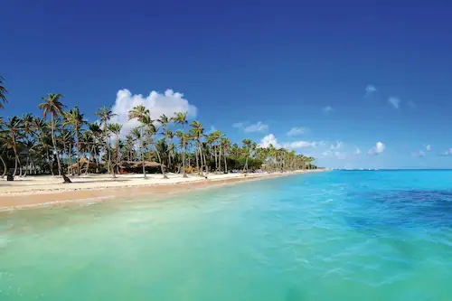
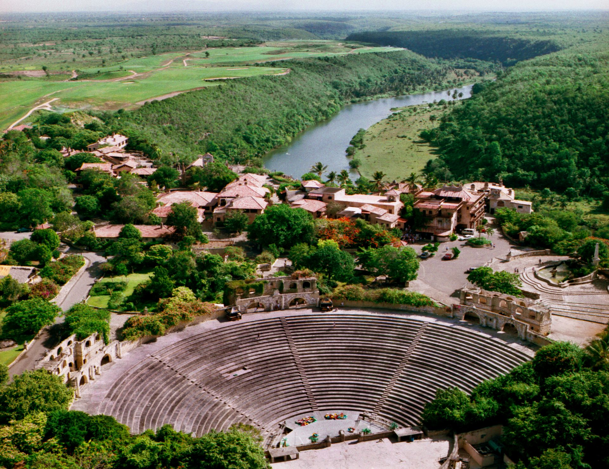
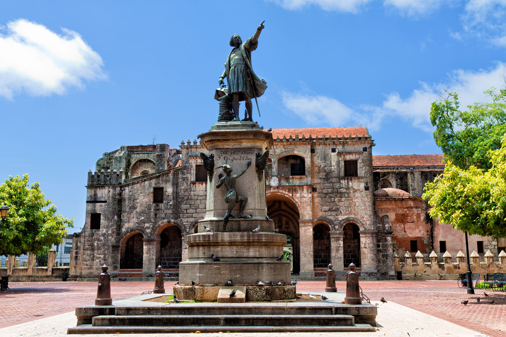
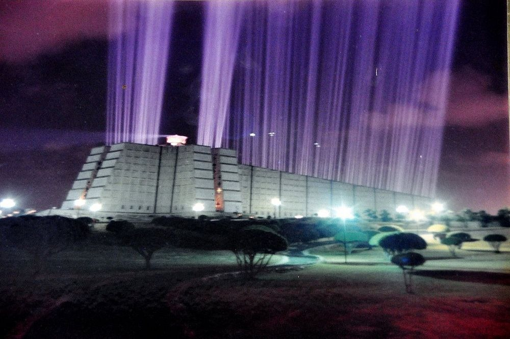
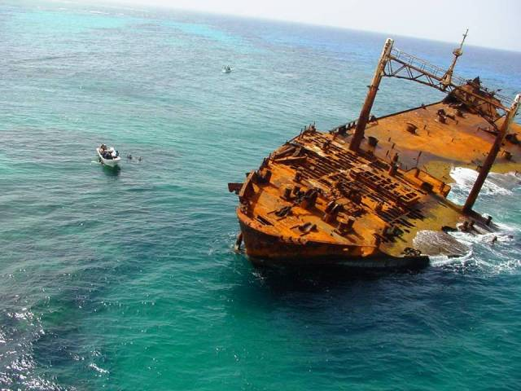

Bavaro Beach
Bavaro Beach is the pain beach in Punta Cana. TStretch 30 miles across the coast of Punta Cana, Bavaro beach holds many excitings things like beach bars, resorts, restaurants, and activities to do along the way. This is a public beach allowing anyone in Punta Cana to come and enjoy the beautiful weather and ocean!
Alto De Chavon
Alto De Chavon is a 16th century Mediterranean villages that was built of entirely stone. The village was built over six years and lays 300 feet above the Chavon River. The villages opening started with Frank Sinatra performing at their 5,000 seat outdoor amphitheater! Alto De Chavon now sits as a great tourist attraction with many cigar, clothing and jewerly shops, restaurants, bars, and many other activities!
Columbus Park
One of the most active parks in the Domincan republic faces the oldest cathedral in the Americas. At the center of this beautiful park sits a large statue of Christopher Columbus which points to the island he discovered. Columbus park is a magnet for tourists as there are many musicians playing music and sidewalk cafes along the way.
Columbus Lighthouse
Columbus Lighthouse is located on the eastern end of Santo Domingo. The building was built in the shape of a cross and the remains of Christopher Columbus were located at this location. The layout of the light house was designed by Joseph Gleave and was built to commermorate the 500th anniversary of Columbus' arrival. Multiple sections of this mausoleum/museum contain artifacts from around the Americas.
Ocean World Adventure Park
Ocean World is located along Cofresi Beach, about 3 miles from central Puerto Plata. The park is open Tuesday to Sunday, from 8:30 a.m. to 5:30 p.m. The park offers many things to do like reef snorkeling, animal shows, access to Doplhin Beach, lunch, and transportation from hotels. Cost start at $69 for adults, $54 for seniors 65+ and kids 4-12, and infants 3- can enter for free.
about 3 miles from central Puerto Plata. The park is open Tuesday to Sunday, from 8:30 a.m. to 5:30 p.m. The park offers many things to do like reef snorkeling, animal shows, access to Doplhin Beach, lunch, and transportation from hotels. Cost start at $69 for adults, $54 for seniors 65+ and kids 4-12, and infants 3- can enter for free.
El Astron
A massive 394 foot long freighter from Russia crashed while carrying tons of corn to Cube in 1978. The freighter split in two and sunk to the ground of Bavaro. El Astron is a popular site for advanced divers.